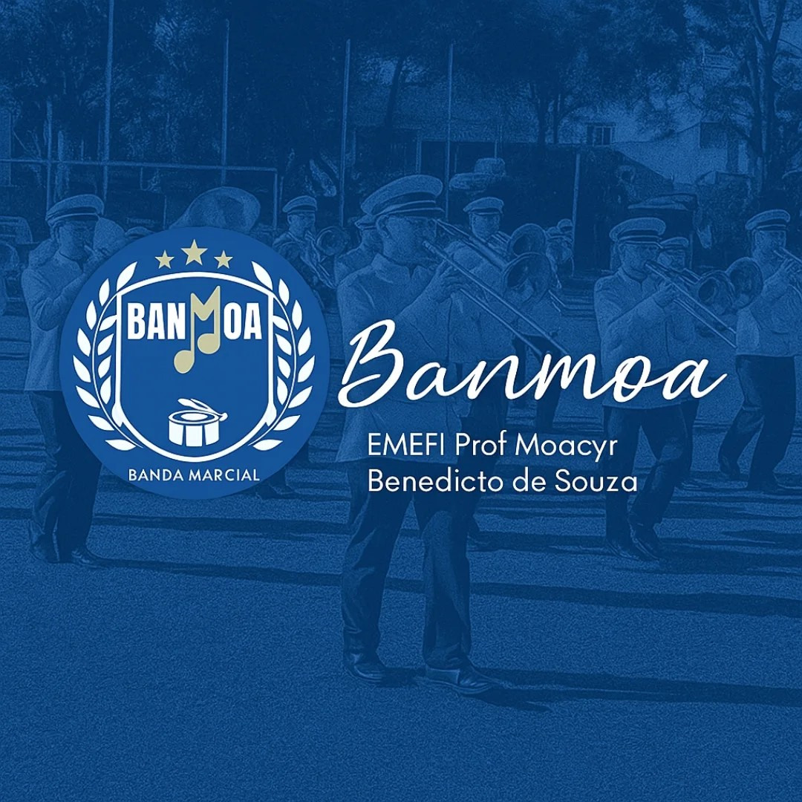

Sobre mim
Sou estudante e entusiasta de tecnologia, apaixonado por desenvolvimento de hardwares e inovações atreladas. Tenho experiência em desenvolvimento Front-end (HTML, CSS e JavaScript) e mais notavelmente na linguagem SQL (Banco de Dados); estou sempre buscando aprender novas tecnologias para aprimorar minhas habilidades e conhecimentos.
Além da tecnologia, também sou boxista, músico e participante do projeto CASD em São José dos Campos, experiências que contribuem para desenvolver disciplina, criatividade e pensamento estratégico.
Meu objetivo é contribuir para projetos que levem ao desenvolvimento tecnológico da Nação, sobretudo na área militar onde pretendo ingressar pelo Instituto Tecnológico da Aeronáutica como oficial da Turma ITA.
Hard Skills
- HTML
- CSS
- JavaScript
- SQL
Soft Skills
- Disciplina — desenvolvida através da prática constante do boxe e dos estudos.
- Pensamento crítico — capacidade de analisar problemas e buscar soluções eficientes.
- Resolução de problemas — habilidade aplicada no estudo de programação e tecnologia.
- Curiosidade intelectual — interesse constante em aprender novas tecnologias e conhecimentos.
- Aprendizado contínuo — dedicação permanente ao aperfeiçoamento pessoal e técnico.
Projetos
Do Amor à Ação: Tecnologia a Serviço do CASD
Após dois anos como aluno do CASD, desenvolvi como Trabalho de Conclusão de Curso um sistema de gestão para automatizar o controle de livros, doações financeiras e equipamentos destinados aos alunos.
O projeto substitui processos manuais e planilhas dispersas, trazendo organização, rastreabilidade e eficiência para uma instituição que transforma vidas através do voluntariado.

BANMOA — Projeto Cultural Feito com Amor
Iniciativa voluntária dedicada à formação musical de jovens, unindo disciplina, prática coletiva e compromisso cultural.
Ingressei na Banda Marcial Moacyr Benedicto de Souza no 8º ano, iniciando no trompete ao lado de uma nova geração de músicos. Entre ensaios e apresentações, vivi uma das experiências mais desafiadoras e transformadoras da minha formação.
Contato
Email: guifabianbraga@gmail.com
Ver repositório no: GitHub
LinkedIn: Guilherme F. Braga